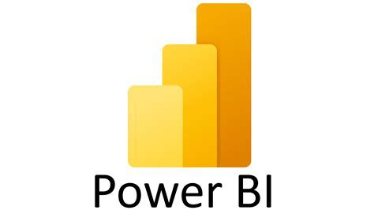
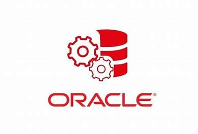
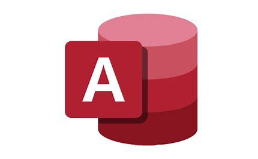
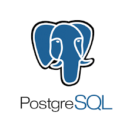
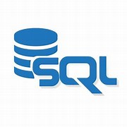
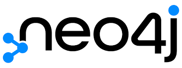
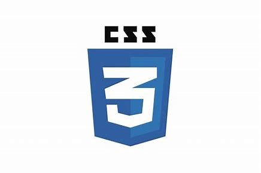
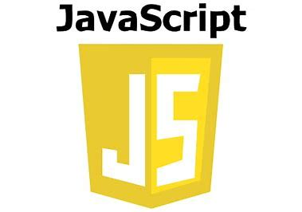
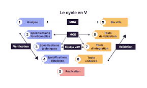

Mes compétences
En tant qu'analyste de données junior chez Safran Aircraft Engines et étudiant en BUT Science des Données, j'ai développé une expertise complète dans l'écosystème de la donnée. Mes différentes expériences professionnelles ainsi que les projets réalisés tout au long de ma formation m'ont permis d'acquérir de nombreuses compétences, tant professionnelles que techniques.
Compétences principales
- Analyse de données dans leur contexte métier pour produire des analyses pertinentes et actionables
- Conception et mise en place de processus d'Extraction, Transformation et Load (ETL) robustes
- Création de visualisations claires et utiles pour la prise de décision stratégique
- Analyse prédictive et statistiques avancées : Machine Learning, fine-tuning, retrieval pour la prise de décision
- Gestion complète de projets décisionnels : de la définition du besoin à l'accompagnement des utilisateurs
- Rédaction de documentation technique et réalisation de tests fonctionnels
- Architecture de solutions Big Data et mise en place d'infrastructures de données scalables
- Développement d'applications web interactives pour la visualisation de données
- Optimisation des performances des bases de données et requêtes complexes
Stack Technique
Business Intelligence & Visualisation
Création de tableaux de bord interactifs et d'analyses visuelles pour le pilotage d'activité

Power BIBases de Données & ETL
Conception, administration et optimisation de bases de données relationnelles et processus ETL

Oracle
Access
PostgreSQLProgrammation & Data Science
Développement d'algorithmes et analyse statistique avancée

SQL
Cypher MQL
MQL
Développement Web

CSS
JavaScriptBases de Données NoSQL
MongoDB
Big Data & Calcul Distribué
Machine Learning & IA
 Apprentissage Automatique
Apprentissage Automatique
 Descente du Gradient
Descente du Gradient
 Séries Temporelles
Text Mining
Séries Temporelles
Text Mining
Développement Web & APIs
Gestion de Projet & Versioning
 Git
Git

Cycle en VLangages Spécialisés
Langages dédiés à la transformation et manipulation de données
Compétences Transversales
Soft skills et compétences méthodologiques essentielles